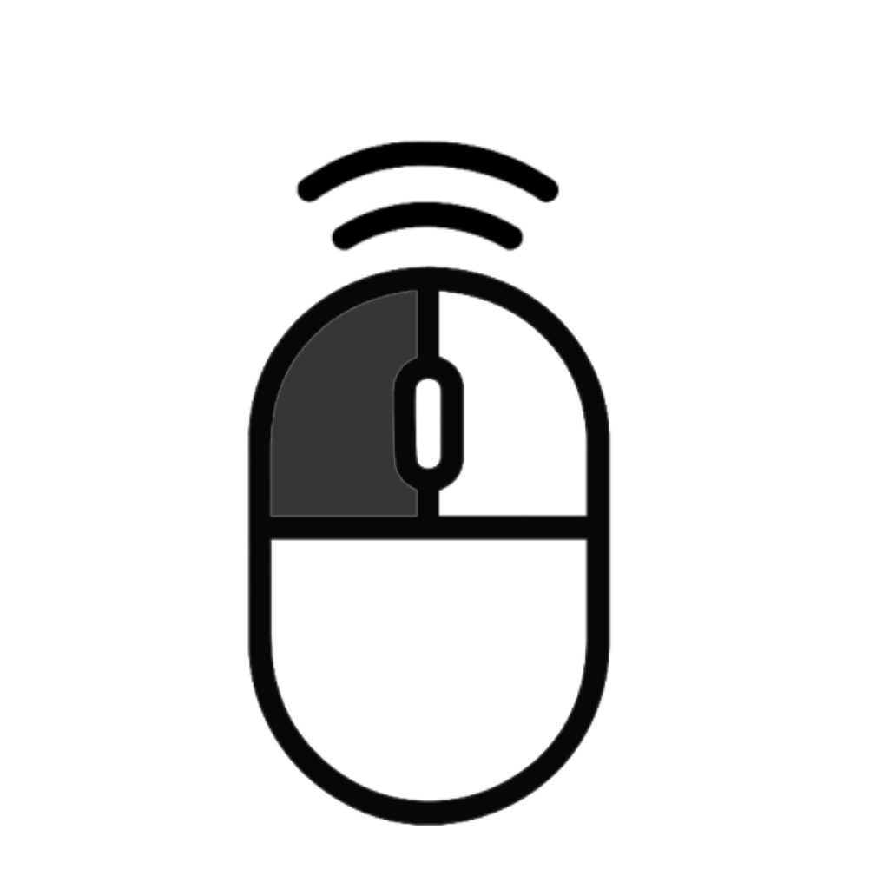

1. Double-clicking on a word
When you double-click on a word, the plugin highlights it with a new random background color. If the word has been highlighted before, the same color is used for consistency.
For example, if you double-click on the word "highlight", the word will be highlighted with a new color.
For example, if you double-click on the word "highlight", the word will be highlighted with a new color.

2. Triple-clicking to change color
If you triple-click on a previously highlighted word, the plugin will generate a new random color and change the highlight color of that word.
For example, if the word "highlight" was already highlighted in yellow, triple-clicking it will change the highlight color to a new color.
For example, if the word "highlight" was already highlighted in yellow, triple-clicking it will change the highlight color to a new color.

3. Right-clicking to clear highlights
When you right-click anywhere on the page, all highlights will be cleared, and the plugin will reset the word color map, allowing you to start fresh.